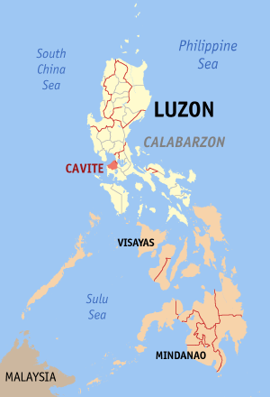

Who We Are
카라 선교팀은 누구인가요?
👋 하나님의 기쁨, 카라!
카라는 한국예술종합학교 기독교 동아리 KARA에서 시작된, 하나님의 명령에 따라 문화선교 사역에 힘쓰는 청년들의 모임이에요. KARA는 헬라어로 ‘하나님의 기쁨’이라는 뜻입니다. 우리는 하나님의 기쁨이 되고자 여기에 모였어요!
너는 청년의 때에 너의 창조주를 기억하라전도서 12:1
청년의 때에 하나님을 기억하는 것은 쉽지 않습니다. 그러나 카라는 그 쉽지 않은 상황 속에서도 하나님을 생각했어요. 하나님께서 주신 달란트를 나의 영광이 아니라 하나님께 드리기 위해, 우리의 재능을 생명을 살리고 복음을 전하는 일에 쓰기로 결심했습니다.
13 Disciples
🗽 선교를 떠나는 열세 명의 제자들
Where
어디로 복음을 전하러 가나요?
✈️ 필리핀 카비테 (Cavite)

카비테 지역은 루손섬에 위치하며 인구는 약 10만 명, 마닐라만에 접해 마닐라 남서쪽 약 16km 지점에 있습니다. 카라는 2007년부터 이 지역에 교회를 세우고 복음화를 위해 힘써오신 배기창·최수정 선교사님과 협력하여, 빈민촌 랑까안 지역을 섬기는 All One in Christ Church(AOICC)에서 사역을 감당합니다.
카라의 필리핀 선교는 이번이 처음이 아니에요. 하나님의 임재하심을 경험했던 지난 겨울에 이어, 다시 그 땅을 찾아갑니다 😍
Mission
👨👩👧👦 무엇을 하나요?
📣전도 핵심 미션
이번 선교 여행의 핵심 미션. 만나는 영혼들에게 복음을 전하며, 한국에서도 계속 품을 수 있는 한 영혼을 위해 기도합니다.
🎭스킷드라마 — Lost Sons
집을 떠나 세상 속에서 방황하는 아들, 그리고 한 자리에서 그 아들을 기다리는 아버지를 비유적으로 풀어낸 드라마.
🎶뮤지컬 갈라쇼
따뜻하고 희망적인 메시지를 담은 뮤지컬 갈라쇼.
💃워십댄스
다윗과 같이 온몸으로 드리는 찬양.
🙌찬양과 경배
하나님께 마음을 다해 올려 드리는 찬양과 경배의 시간.
🎨클리닉
현지 청소년·청년들에게 2회에 걸쳐 ‘드라마’ & ‘워십댄스’ 클래스를 진행하며, 전공을 통해 영혼들과 소통하고 깊이 교제합니다.
🛠️성전 보수
AOICC 성전의 보수 노동 작업으로 현지 교회를 섬깁니다.
🏠가정 방문
AOICC 교회 아이들은 대부분 열악한 터전에서 생활합니다. 그들의 집을 방문하고 함께 모여 기도합니다.
후원 문의
010-5593-9610
카카오뱅크 3333-18-5192491 · 예금주 이주찬
Pray With Us
🙏 함께 기도해 주세요
하나님을 찬송하게 하소서▾
이번 단기선교를 통해 우리를 지으신 하나님의 목적, 곧 하나님을 찬송함에 대한 깊은 은혜와 깨달음이 부어지게 하소서.“이 백성은 내가 나를 위하여 지었나니 나를 찬송하게 하려 함이니라” — 이사야 43:21
구원의 비전을 발견하게 하소서▾
이 여정을 통하여 각자의 일상 속 바람과 꿈을 주님께 내려놓고, 하나님께서 주신 세상 영혼들을 향한 구원의 비전을 발견하게 하소서.“나를 따라오라 내가 너희를 사람을 낚는 어부가 되게 하리라” — 마태복음 4:19
아버지와 아들 됨을 경험하게 하소서▾
이번 선교 여행에서 아버지와 아들 됨을 깊게 경험하는 은혜를 허락하소서.“아직도 거리가 먼데 아버지가 그를 보고 측은히 여겨 달려가 목을 안고 입을 맞추니” — 누가복음 15:20
선교사님·현지 교회와 연합하게 하소서▾
카라 선교팀과 현지 배기창·최수정 선교사님, AOICC 교회의 연합을 통해 동역으로 일하시는 하나님을 목도하게 하소서.“하나님을 사랑하는 자… 에게는 모든 것이 합력하여 선을 이루느니라” — 로마서 8:28
안전과 필요한 모든 것을 공급하소서▾
선교 여정 가운데 안전과 건강을 지켜주시고, 자비량으로 떠나는 모든 팀원에게 필요한 모든 물질의 공급하심을 경험하게 하소서.“각 사람의 필요를 따라 나누어 줌이라” — 사도행전 4:34–35
Leave a Message
💌 응원과 기도 한마디
0 / 100기도로 아들의 발걸음을 옮겨주세요
🚶
🏠
“아직도 거리가 먼데 아버지가 그를 보고 측은히 여겨 달려가 목을 안고 입을 맞추니” — 누가복음 15:20